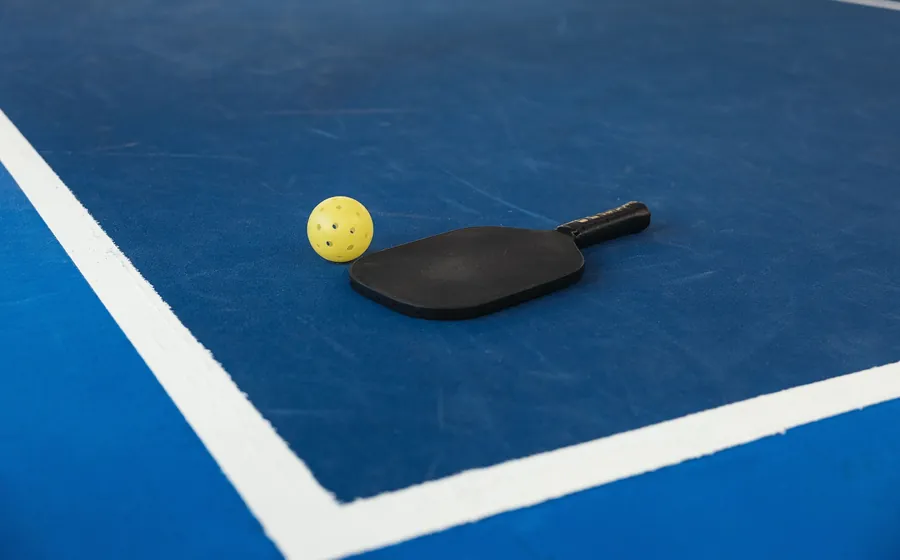

Khi tìm học phí Pickleball 1 kèm 1 tại TP.HCM, bạn sẽ thấy nhiều cách báo giá: theo giờ, theo buổi, theo gói hoặc chưa gồm phí sân. Vì đơn vị tính khác nhau, một con số thấp hơn chưa chắc có tổng chi phí thấp hơn. Cách so sánh hợp lý là quy tất cả về cùng thời lượng và kiểm tra rõ phạm vi dịch vụ.
Ví dụ, buổi 60 phút và buổi 90 phút không thể so trực tiếp chỉ bằng giá niêm yết. Tương tự, một gói có video phân tích, bài tập tự luyện và hỗ trợ ngoài giờ sẽ khác với hình thức huấn luyện chỉ kết thúc khi rời sân.
Những yếu tố quyết định học phí Pickleball 1:1
Thời lượng mỗi buổi
Thời lượng phổ biến có thể dao động theo từng huấn luyện viên và sân. Một buổi dài hơn cho phép khởi động, sửa kỹ thuật, lặp bài tập và đưa kỹ năng vào tình huống thực tế. Tuy nhiên, thời gian dài chỉ có giá trị khi buổi học được chia rõ mục tiêu; tập lan man trong 90 phút không hiệu quả hơn một buổi 60 phút được thiết kế tốt.
Trình độ và kinh nghiệm của huấn luyện viên
Mức phí thường phản ánh kinh nghiệm thi đấu, khả năng quan sát chuyển động, kỹ năng truyền đạt và mức độ theo sát học viên. Chứng chỉ hoặc thành tích là thông tin đáng tham khảo, nhưng người học cũng nên chú ý khả năng giải thích dễ hiểu và biến phản hồi thành bài tập cụ thể.
Phí thuê sân và khung giờ
Giá sân có thể thay đổi theo địa điểm, chất lượng mặt sân, sân trong nhà hay ngoài trời và giờ cao điểm. Vì vậy, trước khi đặt lịch cần hỏi rõ học phí đã bao gồm sân chưa. Nếu chưa, hãy yêu cầu dự kiến tổng tiền cho đúng khung giờ bạn muốn học.
Học cụ và dịch vụ đi kèm
Bóng tập, dụng cụ hỗ trợ, video quay chậm, bản tóm tắt sau buổi và hỗ trợ hỏi đáp đều ảnh hưởng tới giá trị thực. Người mới chưa có vợt cũng nên hỏi có thể mượn dụng cụ trong buổi trải nghiệm hay không để tránh mua vội một cây vợt chưa phù hợp.
Mức độ cá nhân hóa
Gói học được xây từ đánh giá đầu vào và điều chỉnh theo tiến bộ thường cần nhiều thời gian chuẩn bị hơn giáo án chung. Đây cũng là điểm chính khiến học riêng khác lớp nhóm: tiền học được dùng cho việc quan sát, sửa lỗi và thiết kế bài tập cho một người.
Bảng giá huấn luyện 1:1 tại 5P Pickleball
| Gói học | Chi phí | Thời lượng | Phù hợp |
|---|---|---|---|
| Đánh giá đầu vào | 590.000đ | 1 buổi × 90 phút | Người muốn kiểm tra trình độ trước khi mua gói. |
| Lộ trình 8 buổi | 4.800.000đ | 8 buổi × 90 phút | Xây nền hoặc tập trung sửa nhóm lỗi chính. |
| Lộ trình 16 buổi | 8.800.000đ | 16 buổi × 90 phút | Muốn theo sát dài hơn và đi sâu vào chiến thuật. |
Tính theo học phí niêm yết, gói 8 buổi tương đương 600.000đ mỗi buổi; gói 16 buổi tương đương 550.000đ mỗi buổi. Đây là chi phí huấn luyện, chưa cộng phí thuê sân. Bảng giá được ghi nhận ngày 28/07/2026 và có thể được điều chỉnh trong tương lai; khách học nên xác nhận lại trước khi đặt lịch.
Buổi đánh giá đầu vào có cần thiết không?
Đánh giá đầu vào giúp tránh mua gói không phù hợp. Người mới cần kiểm tra khả năng phối hợp, di chuyển và cách tiếp thu; người đã chơi cần xác định lỗi nào đang gây mất điểm nhiều nhất. Từ kết quả này, hai bên có thể thống nhất mục tiêu thực tế và số buổi dự kiến.
Tại 5P, buổi đánh giá tập trung vào 12 nhóm tiêu chí kỹ thuật và chiến thuật, sửa ba lỗi ảnh hưởng lớn nhất, đề xuất lộ trình và gửi video recap. Mục đích không phải chấm điểm để tạo áp lực, mà để có mốc ban đầu cho lần đánh giá sau.
Cách so sánh hai bảng giá mà không bị nhầm
- Quy đổi về cùng số phút huấn luyện trực tiếp.
- Hỏi rõ phí sân, bóng tập và dụng cụ đã được bao gồm hay chưa.
- Kiểm tra lớp thực sự 1:1 hay có ghép thêm người trong cùng khung giờ.
- Hỏi về video, bài tập tự luyện và hỗ trợ sau buổi.
- Xác nhận chính sách đổi lịch, bảo lưu và điều kiện của cam kết tiến bộ.
- Ưu tiên một buổi trải nghiệm trước khi thanh toán gói dài.
Làm sao tối ưu ngân sách học Pickleball?
Người có ngân sách giới hạn có thể dùng buổi 1:1 để học kỹ thuật mới hoặc sửa lỗi, sau đó tự tập với bạn bè. Ở buổi tiếp theo, huấn luyện viên kiểm tra lại và nâng bài tập. Cách xen kẽ này giúp mỗi buổi học riêng có mục tiêu rõ ràng.
Nếu chưa chắc có phù hợp, hãy bắt đầu từ buổi đánh giá thay vì mua ngay gói dài. Bạn cũng nên đọc bài học Pickleball 1 kèm 1 có hiệu quả không và bài học bao nhiêu buổi thì chơi được trước khi quyết định.
Nhận báo giá theo lịch và sân phù hợp
Gửi trình độ hiện tại, mục tiêu và khung giờ mong muốn. 5P sẽ tư vấn gói học, địa điểm và phần phí sân dự kiến trước khi bạn xác nhận.
Đăng ký tư vấn học phí